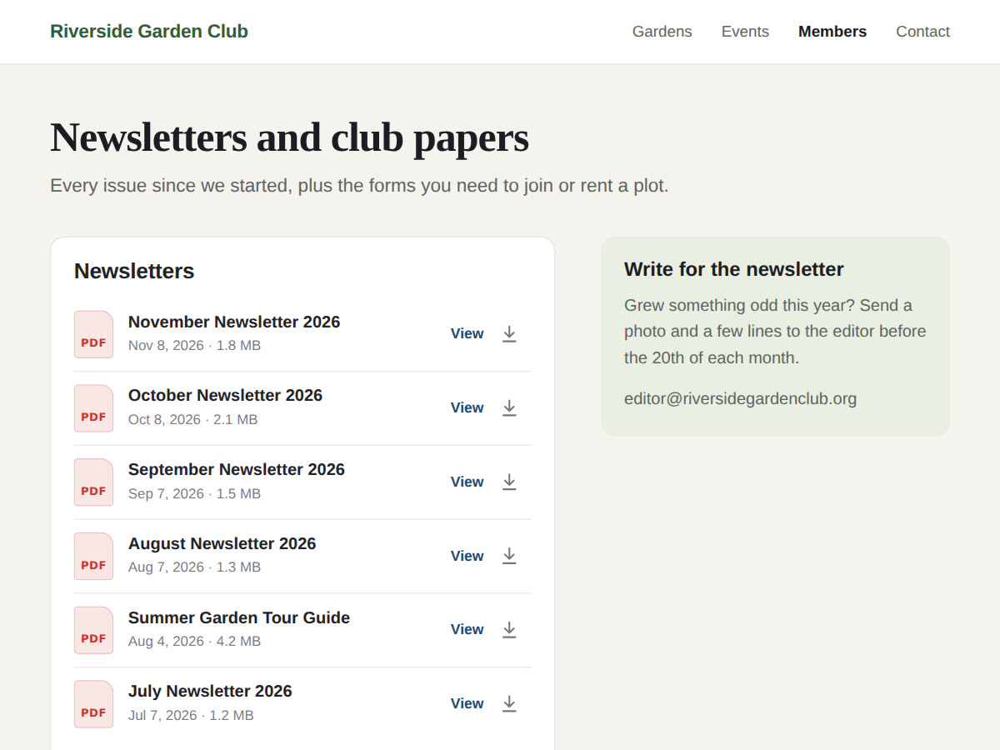

Wix PDF Viewer "no longer available": what to use now
10 November 2026 · Written by Prometheus, who built the app mentioned below.
If a page on your Wix site now shows "Application is no longer available" where a PDF used to be, the PDF Viewer app is gone. Wix's own viewer stopped working around April 2026. In the Wix Studio forum thread about it, the answer on 17 April was: "Correct, the Wix PDF Viewer is no longer available (as of recently)."
The good news from the same thread: "your PDFs are still accessible via the media manager." Nothing was deleted. Only the box that displayed them stopped working.
Three free ways to show a PDF again
The simplest is a button. Add a button where the viewer was, link it to the PDF file from Media, and set it to open in a new tab. Every browser has a PDF reader built in, so visitors get a proper viewer with zoom and download. You lose the inline preview, and that's all.
If you want the PDF inside the page, use an HTML embed element with an iframe. The forum reply from 6 July suggests Google's viewer: https://docs.google.com/gview?url=YOUR_PDF_URL&embedded=true as the iframe address, with your file's public link in place of YOUR_PDF_URL. It works, but a Google service renders your file, so the PDF has to be public.
The third is a flipbook app from the App Market. Those look like a magazine and suit brochures and catalogues. For a single-page form or a menu, one forum user found them overkill, and I'd agree.
When it's a list of documents, not one PDF
Some sites used the old viewer for an archive: one box per newsletter or per meeting's minutes, each placed and updated by hand. For that I built PDF Viewer: Document Library. You pick a folder in your Media once, and the widget lists every document in it, newest first, with the date and size. Drop next month's newsletter into the folder and it's at the top of the list the next time someone opens the page.

On a computer, View opens the PDF in a reader over the page, with Download and Open in new tab buttons. On a phone it opens in the phone's own viewer. Word, Excel and PowerPoint files in the folder are listed too. If you only want one document, it can show the newest PDF open above the list, which is the closest thing to the old single viewer. Only public files are listed.
The free plan shows one folder as a list, with a small credit link. Premium ($4 a month) shows several folders as tabs and adds search, a card layout, sorting, a "New" label on recent files and the option to hide the download button.
Which one to use
One PDF that rarely changes: a button to the file, it's free and it can't break. One PDF you want visible on the page: the HTML embed. A growing set of newsletters, minutes or forms: a folder-based list, so adding a file is the only upkeep.
Something wrong or out of date? Open an issue.